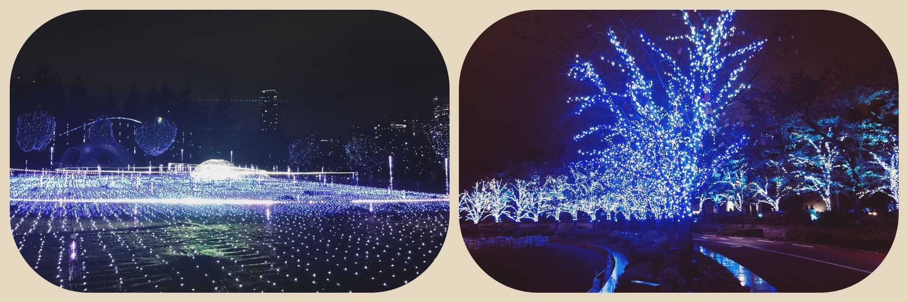
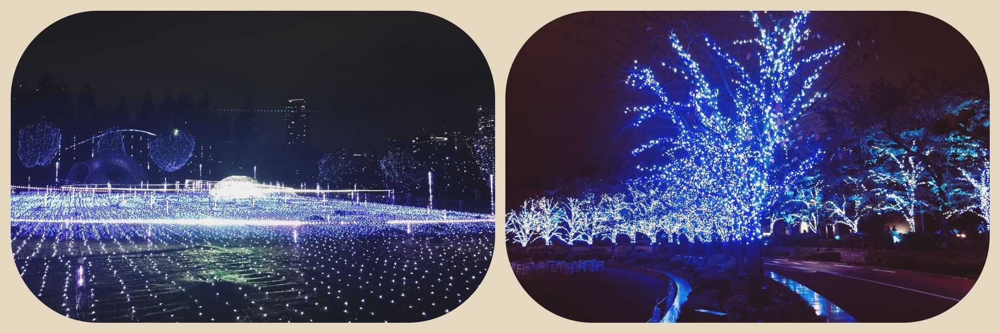

2020/1203Thu初めましての握手会 ☺︎ 黒見明香(16)
ずっと、初めてお話できる日を待ってたの☺︎
ココを見つけてくださり ありがとうございます♪
乃木坂46 新４期生の黒見明香です。
すこーしだけ自己紹介させてください☺︎
♪:*:･･:*:･･:*:･･:*:･･:*:･･:*:･♪:*:･･:*:･･:*:･･:*:･･:*:･･:*:･♪
黒見 明香（くろみ はるか）
2004年1月19日生まれ 16才
香港生まれ・東京都出身です
あだ名： くろみん・黒見ちゃん
3の倍数9・6・3(くろみ)
と覚えてもらえたら嬉しいです♪
＊
↓頂いたコメントから
◎猫舌SHOWROOMで起きた黒マジックの黒歴史て...丁度じゃん！
本当に！恥ずかしすぎる... ｡ﾟ(｡ﾉω＼｡)ﾟ｡笑
♬ *。♩*。♬
今夜の「のぎおび」は
♪:*:･･:*:･･:*:･･:*:･･:*:･･:*:･♪:*:･･:*:･･:*:･･:*:･･:*:･･:*:･♪

-:-:୨୧:-:- 大好きな皆んなとお話しできる日が決まったよー！嬉しいナ〜♡
【 決定！『僕は僕を好きになる』 発売記念
＊
いつの日か、"真夏さんリスペクト軍団"に

◎矢久保美緒ちゃん♡
わからない時にもすぐに教えてくれて、たくさん助けてくれている優しいみっちゃん。
いつもモバメも一生懸命で、みっちゃんの笑顔が大好きです。落ち着いたら、早く一緒にお茶飲みに行きたいな〜♬
◎弓木奈於ちゃん♡
お話しするのが上手なおっとり奈於ちゃん。
↓昨日発表されたグッズはこちらだよ✨
♪:*:･･:*:･･:*:･･:*:･･:*:･･:*:･♪:*:･･:*:･･:*:･･:*:･･:*:･･:*:･♪

-:-:୨୧:-:-お出かけがむずかしい今、いつか見た12月の景色だよ〜 ☺︎寒いけどなんだかドキドキするね✨
♬ *。♩*。♬
⚫︎くろみんファンの総称はくろミスがいいです！どうですか？
♬ *。♩*。♬
⚫︎サイリウムヌンチャクが届いたよ。
振動を感知して自動で発光。7色に自動で変色。
ちなみに、商品の説明画像では棍の色が紫と緑に光ってた。偶然の妙と呼ぶか運命と呼ぶか...
いろんな能力が足りないから、なんとか、皆んなの心に寄り添える人になれるよう、バッジに恥じないメンバーになれるよう・・・
♬ *。♩*。♬
そして、お誕生日を迎えるあなたへ・・
✨HAPPY BIRTHDAY✨
どうぞ素敵な一年になりますよう✩︎⡱
♪:*:･･:*:･･:*:･･:*:･･:*:･･:*:･♪:*:･･:*:･･:*:･･:*:･･:*:･･:*:･♪
ここまで読んでくださったアナタ、ほんとうにありがとう♡
またねヾ(･ω･*)
すごく寒いね〜！大丈夫だった？
今日も一日お疲れ様でした✩︎⡱
ココを見つけてくださり ありがとうございます♪
乃木坂46 新４期生の黒見明香です。
すこーしだけ自己紹介させてください☺︎
♪:*:･･:*:･･:*:･･:*:･･:*:･･:*:･♪:*:･･:*:･･:*:･･:*:･･:*:･･:*:･♪
黒見 明香（くろみ はるか）
2004年1月19日生まれ 16才
香港生まれ・東京都出身です
あだ名： くろみん・黒見ちゃん
3の倍数9・6・3(くろみ)
と覚えてもらえたら嬉しいです♪
＊
↓頂いたコメントから
◎猫舌SHOWROOMで起きた黒マジックの黒歴史て...丁度じゃん！
皆さんが配信中に、コメントに欄に
「顔にマジックついてるー！あご！」
って教えてくださって、初めて気付きました・・・Σ（ﾟдﾟll）汗
途中、手にもマジックつけちゃって黒くなって、
画面から消えちゃってごめんなさい。。><
＊
今週の「のぎおび」でも、おもわず
「ハッシュタグの、"ぎばつ"」
「ハッシュタグの、"ぎおび"」
と読んでしまい、
自分でも ぎばつ？ぎおび？ぎょび？？
ってなってて、本当に申し訳なかったです\(//∇//)\
◎「毎日が黒歴史」を何かしら作ってるね笑
ホントですよね。。。><
いつか落ち着いた、大人な女性になれるよう...
精一杯頑張ります！笑
それまで、また何かやらかしてたり、間違ってたら
・・・教えて下さいね (*ˊᵕˋ*)੭✨
（皆んなが頼りです〜いつもアホに付き合ってくれてありがとう！）
♪:*:･･:*:･･:*:･･:*:･･:*:･･:*:･♪:*:･･:*:･･:*:･･:*:･･:*:･･:*:･♪

-:-:୨୧:-:- 林ちゃんとリラックスお部屋トーク✨楽しかったー♬ るなぴのサイリウムはピンクだよー！
-:-:୨୧:-:- 林ちゃんとリラックスお部屋トーク✨楽しかったー♬ るなぴのサイリウムはピンクだよー！
【 のぎおび4期生スペシャルウィーク✨ 】
最高に面白い＆声も綺麗な天才 林瑠奈ちゃん♡と、
初めて、「のぎおび」２人配信させて頂きました〜！
⚫︎ハッシュタグの、ぎばつ」めっちゃ笑いました！！
⚫︎確かに「の」で迷うことはあるけど、「ここで間違えるか！」となったよ笑
本当に！恥ずかしすぎる... ｡ﾟ(｡ﾉω＼｡)ﾟ｡笑
ぎおび、を10回早口で言うと、"ぎょび"になって
だいたい"のぎおび"に聞こえる、
と言うことも発見しましたヾ(･ω･*)oエッヘン
＊
林＝884、黒見＝963 の倍数コンビのコンビ名は・・・
『トゥエルブ黒林』（命名：林瑠奈ちゃん♡）
カタカナが苦手な私は
林ちゃんにスペルを教えてもらいながら
ボードに書きました・・・Σ（ﾟдﾟll）
合ってるかな？
またトゥエルブ黒林でお届けできるのを
楽しみにしていて下さいね✩︎⡱
観てくださった方、応援やコメントくださった方、
本当にありがとうございましたー!!
大好きな皆んなのお名前も見えてて心強かったですー✨
♬ *。♩*。♬
今夜の「のぎおび」は
遠藤さくらちゃん♡と矢久保美緒ちゃん♡だよ〜✨
今日の発表は何かなー？
ぜひ、一緒に観ようねー (*ˊᵕˋ*)੭
♪:*:･･:*:･･:*:･･:*:･･:*:･･:*:･♪:*:･･:*:･･:*:･･:*:･･:*:･･:*:･♪
-:-:୨୧:-:- 大好きな皆んなとお話しできる日が決まったよー！嬉しいナ〜♡
【 決定！『僕は僕を好きになる』 発売記念
オンライン ミート＆グリート（個別トーク会）】
⚫︎ミーグリが楽しみで楽しみで夜しか眠れません！笑はるかちゃんもかな？笑
⚫︎遂に直接話せる日が来るんだね！！本当に待ちに待ったって感じだから楽しみすぎるよ！
そうなの、そうなのーっ((〃ω〃))♡
一昨年から、ずっと、初めての握手会となる
「個別トーク会」でお話しできる日を夢見ていたので、
嬉しくて、もう今からドキドキわくわくしています✨
お待たせしました！
今から、いっぱいアイディア考えてるよー✩︎笑
＊
⚫︎初めて会話する時、緊張し過ぎて上手く話せなかったらごめんね(･･;)
⚫︎黒見ちゃんから色々な話聞かせてね！
もちろんだよー！
もちろんだよー！
わたしも緊張しちゃうかもだけど、
バレンタインデー♡も、ホワイトデー♡も
いっぱいお話し用意しているので、
どうぞ良かったら、ぜひ気軽に会いに来てねー (*ˊᵕˋ*)੭✨
＊
ブログではお話しできなかったことや、
もどかしい思いもあるから、
個別トークすっごく楽しみだよー！！
それぞれの日に、時間帯に、
お洋服も髪型も、お話ネタも((〃ω〃))フフ
いろいろ考え中だよ〜♬
いつの日か、"真夏さんリスペクト軍団"に
入れるような大人になれるよう目指してるので・・・
どうぞご期待ください☺︎✨
♬ *。♩*。♬
⚫︎2/27いないの寂しい、実は誕生日だったからお話したかったんだ〜〜( •̥ ˍ •̥ )
○どーしても学業で、2/27だけ不参加で本当にごめんなさい><
お誕生日お祝いしたかったなー涙
ちょっと早いけど、他の日にいっぱいお話し、お祝いさせてね✩︎⡱
期待しててねー！笑
⚫︎ その前に「抽選」という敵と戦わなきゃ。「全集中 当選の呼吸！」会えるよう祈っててね。
○うん！当選の呼吸✩︎⡱ わたしも全集中✨して
大好きな皆んなとお話しできるよう祈ってるね！
オンライン ミート＆グリート（個別トーク会）は、
ただいま【第1次応募受付中】明日の14時までだよー！
↓抽選申込方法、詳しくはココだよー☺︎
♪:*:･･:*:･･:*:･･:*:･･:*:･･:*:･♪:*:･･:*:･･:*:･･:*:･･:*:･･:*:･♪
-:-:୨୧:-:- 大好きな4期生16人の名前の入っている「4期生ライブグッズ」はこのあと21時〜発売だよー☺︎
【 祝✨4期生の誕生日 】
本日、12月3日は、4期生2周年記念の大切な日です(*´-`)
4期生を育ててきてくれた、素敵な11人のお姉さんたちが
お見立て会で初めてステージに立って、
初めて皆んなと握手した日でもあるねー！
✨おめでとうございます！！
3周年に向けて、また新たに合流させていただいたことを、
心から嬉しく思うと同時に、
責任も感じています。
憧れの先輩方、応援してくださる大好きな皆さまが
「やっぱ乃木坂だな！」
いつの日か
「4期生は16人だよね！」
と言って頂けるよう、
先輩方、お姉さん達の姿からいっぱい学んで
精一杯、懸命に頑張ります (*ˊᵕˋ*)੭
どうぞ、3周年も、5周年も、10周年も・・・
いっぱい一緒に、とっておきの想い出作ろうね！
あなたが、一緒に坂を登ってくれたら嬉しいです((〃ω〃))
♬ *。♩*。♬
【 乃木坂46 4期生ライブ2020✨ 】
いよいよ今週日曜日ー！！
全力で、16人力合わせて頑張っていますよーヾ(･ω･*)o
前回のブログに続いて・・・
⚫︎くろみんにとって4期生のメンバーはどんな存在ですか？15人分全員教えて欲しいです。
大好きな４期生のこと、5人ずつ書かせてくださいね♪
（*前回、前々回の五人はココだよ〜↓）
◎早川聖来ちゃん♡
ダンスを踊る時の手の使い方や体の使い方もとっても綺麗で、女性らしい姿に憧れています。
ダンスを踊る時の手の使い方や体の使い方もとっても綺麗で、女性らしい姿に憧れています。
いつも優しくお話を聞いてくれる優しい聖来ちゃん。ちょこちょこ出る関西弁も可愛い憧れのお姉さんです。
◎林瑠奈ちゃん♡
オーディションの時から番号が隣で、名前の数字も4の倍数と3の倍数と、一番長く知っている大好きな林ちゃん。
◎林瑠奈ちゃん♡
オーディションの時から番号が隣で、名前の数字も4の倍数と3の倍数と、一番長く知っている大好きな林ちゃん。
皆んなのことをよく見てくれていて、たくさん突っ込んでくれる、しっかり者で優しいお姉さん。
◎松尾美佑ちゃん♡
大人っぽい見た目と、明るくて可愛らしい内面も大好きです。
◎松尾美佑ちゃん♡
大人っぽい見た目と、明るくて可愛らしい内面も大好きです。
笑顔が印象的で、手先が器用なところにも心から憧れています。いつもありがとう！
◎矢久保美緒ちゃん♡
わからない時にもすぐに教えてくれて、たくさん助けてくれている優しいみっちゃん。
いつもモバメも一生懸命で、みっちゃんの笑顔が大好きです。落ち着いたら、早く一緒にお茶飲みに行きたいな〜♬
◎弓木奈於ちゃん♡
お話しするのが上手なおっとり奈於ちゃん。
責任感が強くて、たくさん褒めてくれる優しいお姉さんで、奈於ちゃんならではの表現の仕方も可愛らしくて心があったまります✨
★ここだけの秘密だよ！笑
リクエストいただいたライブでの公約・・・
コメントで教えていただいた、369(弥勒菩薩)ポーズなど
練習してみたのだけど、963もアヤしいのに、
気づいていただけるか自信がなく・・・\(//∇//)\
やっぱり、いつも通り、、、
いつも思わずやってしまう『Wピース』で
行きたいなって思います！
ちょこちょこ合図送ってると思うので、是非見つけてくださいね (*ˊᵕˋ*)੭✨
♬ *。♩*。♬
⚫︎ライブ告知写真の新4期生、5人のステージでの後ろ姿、見ているとなんだか...ジーンとしてきます。ステージから見た景色は、やっぱりよく覚えていますか？
もちろん、空気も、声も、全部鮮明に覚えています。
秋元真夏さん♡からかけて頂いた言葉、あたたかな乃木坂ファンの皆さんのこと、ずっと原点の一つです。
♬ *。♩*。♬
16人で力を合わせて、とっておきの最高に楽しい時間をお届けします✩︎⡱
ぜひ見届けてくださいね♡
＜公演情報＞
乃木坂46 4期生ライブ 2020
↓昨日発表されたグッズはこちらだよ✨
♪:*:･･:*:･･:*:･･:*:･･:*:･･:*:･♪:*:･･:*:･･:*:･･:*:･･:*:･･:*:･♪

-:-:୨୧:-:-お出かけがむずかしい今、いつか見た12月の景色だよ〜 ☺︎寒いけどなんだかドキドキするね✨
【 文化放送「レコメン!」 乃木坂 4 期生・メガ盛り祭り✨ 】
23:00～23:30 文化放送「レコメン！」にて、
12月7日 掛橋沙耶香、黒見明香、佐藤璃果
12月8日 筒井あやめ、林瑠奈、矢久保美緒
12月9日 柴田柚菜、清宮レイ、松尾美佑
の３人ずつで出演させて頂きます！
ここでしかできないお話しやチャレンジもあるので、
是非楽しみにしててくださいねヾ(･ω･*)o
【 乃木坂46 アンダーライブ 2020✩︎⡱ 】
ついに！日本武道館にて待望のアンダーライブが開催されます！
胸アツですよね(*´-`)✨
① 12月18日(金) 開場 16:30 ／ 開演 18:00 《ライブ配信予定》
② 12月19日(土) 開場 16:30 ／ 開演 18:00 《ライブ配信予定》
③ 12月20日(日) 開場 16:30 ／ 開演 18:00 《ライブ配信予定》
もちろん、わたしも観ますよー!!
是非、熱いアンダーライブも盛り上がりましょうね〜 (*ˊᵕˋ*)੭
♪:*:･･:*:･･:*:･･:*:･･:*:･･:*:･♪:*:･･:*:･･:*:･･:*:･･:*:･･:*:･♪
ブログやお手紙で、たくさんのコメントや感想送って下さり
本当にありがとうございます✩︎⡱
今回、初めてコメントしたよー！というあなたも、
いつも近況を教えてくださるあなたも、
大切な時間を使ってお話しして下さり
本当にありがとうございます✨
あなたに出逢えた奇跡に、感謝しながら、
大事に、一つずつ全部読ませて頂いています((〃ω〃))
皆さんのことを知ることが出来る、
私の１日の中で『１番幸せな時間』です♩
いよいよ1月から！個別トーク会で、
ブログやお手紙で、たくさんのコメントや感想送って下さり
本当にありがとうございます✩︎⡱
今回、初めてコメントしたよー！というあなたも、
いつも近況を教えてくださるあなたも、
大切な時間を使ってお話しして下さり
本当にありがとうございます✨
あなたに出逢えた奇跡に、感謝しながら、
大事に、一つずつ全部読ませて頂いています((〃ω〃))
皆さんのことを知ることが出来る、
私の１日の中で『１番幸せな時間』です♩
いよいよ1月から！個別トーク会で、
直接お話しできる時が、 とっても待ち遠しいです✩︎⡱
＊
寒い日が続いて、仕事や勉強が忙しかったり、
なんだか体調イマイチだよー、疲れちゃったよーって方も
本当に、お疲れ様でした✩︎⡱
きっと心も、身体も、しんどい時もあるかと思います。。
どうぞ、皆さんが 少しでも
ひとときリラックスできますように...✩︎⡱
と願っています(*´-`)
初めて会える日を、楽しみに待っています♪
＊
明日はいつも送ってくれる
＊
寒い日が続いて、仕事や勉強が忙しかったり、
なんだか体調イマイチだよー、疲れちゃったよーって方も
本当に、お疲れ様でした✩︎⡱
きっと心も、身体も、しんどい時もあるかと思います。。
どうぞ、皆さんが 少しでも
ひとときリラックスできますように...✩︎⡱
と願っています(*´-`)
初めて会える日を、楽しみに待っています♪
＊
明日はいつも送ってくれる
ハートの絵文字も可愛い璃果ちゃんですよ〜♬
読んでくださり、本当にありがとうございます☺︎
次回も、会えたら嬉しいなぁ✨
またねヾ(･ω･*)
くろみはるか☺︎
☆ 明日のあなたのラッキーナンバー：❾ と ❸
♪:*:･･:*:･･:*:･･:*:･･:*:･･:*:･♪:*:･･:*:･･:*:･･:*:･･:*:･･:*:･♪
・
・
・
＜ちょこっとアンコール♬笑＞
〜クロミ・ル・フィーユ〜
（クロ見るFeel YOU☺︎）
↑頂いたコメントから〜ありがとう♪
♬ *。♩*。♬
ココからおまけだよ〜笑
楽屋裏でお喋りしてるような感じなので、
気が向いた時にでも〜↓☺︎
♬ *。♩*。♬
読んでくださり、本当にありがとうございます☺︎
次回も、会えたら嬉しいなぁ✨
またねヾ(･ω･*)
くろみはるか☺︎
☆ 明日のあなたのラッキーナンバー：❾ と ❸
♪:*:･･:*:･･:*:･･:*:･･:*:･･:*:･♪:*:･･:*:･･:*:･･:*:･･:*:･･:*:･♪
・
・
・
＜ちょこっとアンコール♬笑＞
〜クロミ・ル・フィーユ〜
（クロ見るFeel YOU☺︎）
↑頂いたコメントから〜ありがとう♪
♬ *。♩*。♬
ココからおまけだよ〜笑
楽屋裏でお喋りしてるような感じなので、
気が向いた時にでも〜↓☺︎
♬ *。♩*。♬
大好きな堀未央奈さん♡のこと
⚫︎卒業っていうのはもう会えないってわけじゃなくて次のステージへ進んでいくっていうことだから、暖かくみんなで見送りたいね！
⚫︎生きてくれてさえいれば応援できるじゃないか、と自分に言い聞かせる今日１日でした。
⚫︎みおなちゃんが乃木坂46で過ごした時間は、卒業した後もずっと続いて繋がっていくんですヨ！きっとあなたの中でも生き続けていきます！
⚫︎みおなちゃんが乃木坂46で過ごした時間は、卒業した後もずっと続いて繋がっていくんですヨ！きっとあなたの中でも生き続けていきます！
⚫︎堀さんは言葉を発しなくても、たたずまい、表情、視線で表現できる人だと思います。人としての素の力で伝えられる人たちが多いグループだと感じます。ぜひそうなってほしい！！
⚫︎「先輩達との時間を大切に」と伝えているんですが、それはどんな世界でも同じみたいですね。
＊
＊
○大切な未央奈さんへの皆んなの想い、私も何度もうるうるしながらコメント読ませて頂きました。卒業への捉え方、これからの目標、たくさんのあたたかなメッセージありがとうございます!! わたしも大事に胸に刻みます✨心の中教えてくれて本当にありがとう☺︎
⚫︎くろみんファンの総称はくろミスがいいです！どうですか？
⚫︎ くろみんみんゼミ
（くろみん：くろみんと みん：みんなの ゼミ：ゼミナール）
（くろみん：くろみんと みん：みんなの ゼミ：ゼミナール）
新しいアイディアもありがとうございます！
大好きな皆さんに頂いた150近いアイディア、大切に熟考させて頂くね〜ヾ(･ω･*)o
♬ *。♩*。♬
⚫︎サイリウムヌンチャクが届いたよ。
振動を感知して自動で発光。7色に自動で変色。
ちなみに、商品の説明画像では棍の色が紫と緑に光ってた。偶然の妙と呼ぶか運命と呼ぶか...
○紫（あなた）× 緑（わたし、癒せる存在になれますように..)
同じなんて！すごい運命ですね (*ˊᵕˋ*)੭ ！？笑
気になりすぎます〜調べてサンタさんにお願いしてみます☺︎
♬ *。♩*。♬
猫舌SHOWROOMのお話
♬ *。♩*。♬
猫舌SHOWROOMのお話
⚫︎美佑ちゃんがくろみんのこと「気配りと優しさの人」って言ってたね？
⚫︎くろみんも「乃木坂４６のバッジ」を付けているからには、「優しくて、強くて、逞しい」乃木メンにならないとね。
美佑ちゃん♡はとっても褒め上手で、4期生のみんな良いところを見つけるのが上手いなぁって感じてるよ✨
⚫︎くろみんも「乃木坂４６のバッジ」を付けているからには、「優しくて、強くて、逞しい」乃木メンにならないとね。
美佑ちゃん♡はとっても褒め上手で、4期生のみんな良いところを見つけるのが上手いなぁって感じてるよ✨
いろんな能力が足りないから、なんとか、皆んなの心に寄り添える人になれるよう、バッジに恥じないメンバーになれるよう・・・
全力で頑張るね (*ˊᵕˋ*)੭
♬ *。♩*。♬
＜マニアックな！？ゲームコーナー✨笑＞
⚫︎ プロスピのリアルタイム対戦最高何連勝したことある？
◯最高は5連勝だよー！
⚫︎ まさか、乃木坂でプロスピをやっている人がいたとは驚きです❗
◯プロスピ実はやってるよ〜！
一緒に楽しもうね☺︎
⚫︎ 特にイベントの交流戦はコンボ上昇量が
かなり大事になってくるから次きた時に
意識してみてね！
◯うん！ありがとう！より意識してみるね！
⚫︎ プロスピ、ドラフトスカウトは引く？
◯年末年始に向けて今は我慢するよ！
⚫︎ くろみんって、コンパス(ゲーム)やってる？？
◯やってないよ〜 どんなゲームなのかな？
⚫︎ 自分もプロスピ頑張ります。！
◯うん！一緒に頑張ろうね☺︎
⚫︎ くろみんは空き時間によくゲームしているんだね。
プロスピのイベント時間がかかるもんね。
◯うん！実はよくイベントとか試合やってるよ〜
⚫︎ くろみんはゲームで野球やサッカーをやってるけど、実際に試合を見に行ったりするのかな？
◯見に行きたいなと思ってるけど、何回かしか行ったことないよ〜！今度行きたいな☺︎
⚫︎ 野球も好きなの？
◯うん！野球見るのも好きでプロスピもやってるよ〜☺︎
⚫︎ くろみんちゃんは、スポーツゲームを
することが多いのかな？
◯プロスピとウイイレどっちもスポーツゲームだね！確かに多いかも！あなたはなんのゲームをすることが多い？
⚫︎ プロスピをする時間はないかな・・・
イベントをする時間の余裕が出来ますように。
◯最近プロスピイベントできてないからまたできるようになったらブログでも書くね！
あなたも楽しみながら頑張ってね☺︎
⚫︎ 好きな動画は「まとめるほどではない」まとめ、実況の放送席にファウルボールが2回も飛んでくる動画が好きです！ゴーンヌ&グッバ〜イ集が先日UPされたの知ってる？
◯うん！私も見たことあるよ！パ・リーグTV面白い動画多いよね！同じ動画楽しんでいて嬉しいな〜♬
⚫︎ ブログ更新されてからこれを書き込むまで乃木フェス頑張ってました！
くろみんレーンで1位獲りました！(^O^)／
サイン入りのグッズ凄い楽しみです！！
ツアーも1位になれそうなので、神推しの称号獲れそうです＾＾
◯乃木フェス1位おめでとう！そして報告してくれてありがとう！嬉しいな☺︎
ツアーも頑張ってね！
⚫︎ 日本シリーズも終わって2020年の野球が終わってしまいましたね
終わってしまったのは残念だけど、くろみんのゲームコーナーを読むのが今の楽しみです。
握手会とかでくろみんとプロスピ についていっぱいお話ししたいなー
◯終わっちゃったから少し残念だけど、来年に向けてみんな頑張って欲しいなと思ってるよー☺︎
ぜひプロスピやプロ野球のお話もできたら嬉しいな☺︎
⚫︎ まさか、乃木坂でプロスピをやっている人がいたとは驚きです❗
◯プロスピ実はやってるよ〜！
一緒に楽しもうね☺︎
⚫︎ 特にイベントの交流戦はコンボ上昇量が
かなり大事になってくるから次きた時に
意識してみてね！
◯うん！ありがとう！より意識してみるね！
⚫︎ プロスピ、ドラフトスカウトは引く？
◯年末年始に向けて今は我慢するよ！
⚫︎ くろみんって、コンパス(ゲーム)やってる？？
◯やってないよ〜 どんなゲームなのかな？
⚫︎ 自分もプロスピ頑張ります。！
◯うん！一緒に頑張ろうね☺︎
⚫︎ くろみんは空き時間によくゲームしているんだね。
プロスピのイベント時間がかかるもんね。
◯うん！実はよくイベントとか試合やってるよ〜
⚫︎ くろみんはゲームで野球やサッカーをやってるけど、実際に試合を見に行ったりするのかな？
◯見に行きたいなと思ってるけど、何回かしか行ったことないよ〜！今度行きたいな☺︎
⚫︎ 野球も好きなの？
◯うん！野球見るのも好きでプロスピもやってるよ〜☺︎
⚫︎ くろみんちゃんは、スポーツゲームを
することが多いのかな？
◯プロスピとウイイレどっちもスポーツゲームだね！確かに多いかも！あなたはなんのゲームをすることが多い？
⚫︎ プロスピをする時間はないかな・・・
イベントをする時間の余裕が出来ますように。
◯最近プロスピイベントできてないからまたできるようになったらブログでも書くね！
あなたも楽しみながら頑張ってね☺︎
⚫︎ 好きな動画は「まとめるほどではない」まとめ、実況の放送席にファウルボールが2回も飛んでくる動画が好きです！ゴーンヌ&グッバ〜イ集が先日UPされたの知ってる？
◯うん！私も見たことあるよ！パ・リーグTV面白い動画多いよね！同じ動画楽しんでいて嬉しいな〜♬
⚫︎ ブログ更新されてからこれを書き込むまで乃木フェス頑張ってました！
くろみんレーンで1位獲りました！(^O^)／
サイン入りのグッズ凄い楽しみです！！
ツアーも1位になれそうなので、神推しの称号獲れそうです＾＾
◯乃木フェス1位おめでとう！そして報告してくれてありがとう！嬉しいな☺︎
ツアーも頑張ってね！
⚫︎ 日本シリーズも終わって2020年の野球が終わってしまいましたね
終わってしまったのは残念だけど、くろみんのゲームコーナーを読むのが今の楽しみです。
握手会とかでくろみんとプロスピ についていっぱいお話ししたいなー
◯終わっちゃったから少し残念だけど、来年に向けてみんな頑張って欲しいなと思ってるよー☺︎
ぜひプロスピやプロ野球のお話もできたら嬉しいな☺︎
♬ *。♩*。♬
おせち料理やワカメスープのこと、ブルース・リー先生誕80周年のお話、チャイナドレス、ペンネームのお話、孤独な青空・サヨナラの意味の歌詞、青年たちの読書クラブ、ミドルネームとドラマFRIENDSのお話、どんぶり委員長のこと、ノギザカスキッツ放送されたよーて嬉しいお話や、鬼滅の刃とドラえもんのお話、ウォッチドッグスレギオンのこと、いい肉の日のお話、アーモンドアイや手作りキーホルダーのお話、宇宙の続編から天体イベントのお話も、保護色の生写真のお話、乃木坂版流行語大賞のこと、お風呂沸いてないのにお風呂場行っちゃった話も(分かります\(//∇//)\)、沢山のコメント本当にありがとう！
嬉しく一つ一つ読ませて頂いています (*ˊᵕˋ*)੭
BOØWYさん、Bon Joviさん、ONE DIRECTIONさん、End of the Worldさん、桑田佳祐さん(サザンオールスターズさんの逸話も)、紙風船さん、DEENさん、相対性理論さん、Aibryちゃん、flumpoolさんと、好きな曲を教えてくれてありがとう！毎週発見があってすごく楽しいです✨
卒業研究、検定や就活頑張ってるよー、体育の発表本番だよ！て方も（頑張ってー!! 力が発揮できますように✨）
健康診断や、病院で検査だよーて方も（どうぞお大事にです><良くなりますように）大変だと思うけれど、一緒に頑張ろねー☺︎
＜おまけ＞
卒業研究、検定や就活頑張ってるよー、体育の発表本番だよ！て方も（頑張ってー!! 力が発揮できますように✨）
健康診断や、病院で検査だよーて方も（どうぞお大事にです><良くなりますように）大変だと思うけれど、一緒に頑張ろねー☺︎
＜おまけ＞
○歌衣装のこと待っててね！また写真と共に載せれるタイミングでお話しできたら嬉しいな✨
○勉強方法聞いてくれた皆んな、わたしも赤点多いから><不安すぎるので、今度先輩方に聞いてみるね！ちゃんとした方法わかったらお伝えするから、もうちょっと待っててね☺︎
○ブログアレンジアイディアもありがとう！やり方が分かったらチャレンジしてみるねヾ(･ω･*)o
○乃木フェス頑張ったよー！てお話も、生写真集めてるお話も、本当にありがとうー♡
嬉しすぎるよぉ〜(；ω；)
嬉しすぎるよぉ〜(；ω；)
♬ *。♩*。♬
そして、お誕生日を迎えるあなたへ・・
✨HAPPY BIRTHDAY✨
どうぞ素敵な一年になりますよう✩︎⡱
♪:*:･･:*:･･:*:･･:*:･･:*:･･:*:･♪:*:･･:*:･･:*:･･:*:･･:*:･･:*:･♪
ここまで読んでくださったアナタ、ほんとうにありがとう♡
またねヾ(･ω･*)
2020/12/03 18:00
コメント(259)
くろみん、こんばんは！
コメント、失礼します！
乃木恋の彼イベを頑張ってました。
なんとか初めての確定枠に入ることが出来ました！
直筆サイン入りグッズを確実に手に入れられるということで、めちゃくちゃ嬉しいです。
気長に待ってまーす。
4期生ライブの余韻がまだ残ってるよ。
せーらの4番目の光についてのコメントが特に印象に残ってるし、嬉しかったです。
自分が考えていたことなので、メンバーも同じように思ってくれたんだなぁ、と。
元々4期生は16人だし、16人で披露してこそ完成されるってことだよね。
そろそろ次の4期生ライブも開催されないかなー笑笑
レコメン、お疲れ様でしたー。
あっという間の30分だったね。
ライブについての新鮮な話や、お褒めの台詞を聴けて楽しかったよ。
まゆちゃんとのエピソードは面白かったよ笑笑
明日はブログ更新日だね。
そして、この後はノギスキ。
楽しみにしてます！
それでは、この辺で。
おやすくろみんー
コメント、失礼します！
乃木恋の彼イベを頑張ってました。
なんとか初めての確定枠に入ることが出来ました！
直筆サイン入りグッズを確実に手に入れられるということで、めちゃくちゃ嬉しいです。
気長に待ってまーす。
4期生ライブの余韻がまだ残ってるよ。
せーらの4番目の光についてのコメントが特に印象に残ってるし、嬉しかったです。
自分が考えていたことなので、メンバーも同じように思ってくれたんだなぁ、と。
元々4期生は16人だし、16人で披露してこそ完成されるってことだよね。
そろそろ次の4期生ライブも開催されないかなー笑笑
レコメン、お疲れ様でしたー。
あっという間の30分だったね。
ライブについての新鮮な話や、お褒めの台詞を聴けて楽しかったよ。
まゆちゃんとのエピソードは面白かったよ笑笑
明日はブログ更新日だね。
そして、この後はノギスキ。
楽しみにしてます！
それでは、この辺で。
おやすくろみんー
黒見さん、おはようございます。
まだ４期生ライブの余韻にひたっております笑
弓木さんのブログに４期生への想いが綴られていましたね。
蘭世さんのブログでは４期生へのエールが書かれていましたし、山下さんからのメールでは「私は仕事で観られないけど４期生を応援してね」と書かれていました。
優しい先輩や同期に恵まれている
乃木坂さんは本当に素晴らしい環境ですね。
４期生ライブの円盤化を早くも期待しております笑
それでは今日も良い１日を！
まだ４期生ライブの余韻にひたっております笑
弓木さんのブログに４期生への想いが綴られていましたね。
蘭世さんのブログでは４期生へのエールが書かれていましたし、山下さんからのメールでは「私は仕事で観られないけど４期生を応援してね」と書かれていました。
優しい先輩や同期に恵まれている
乃木坂さんは本当に素晴らしい環境ですね。
４期生ライブの円盤化を早くも期待しております笑
それでは今日も良い１日を！
くろみん
おはようございます。
「ノギザカスキッツ」見ました。
今回も面白い(笑)
くろみん、表情豊かなのでよくリアクションが映っていますね～
とても、嬉しいです!
「乃木坂らしさ」がちゃんとありますよ!!
来週、いよいよコント出演かな？
ヒップキャッチパーリィィィ!(笑)
楽しみ。
「レコメン!」はあっと言う間に…楽しかった～
くろみんのノリさんの褒め方が上手かった(笑)
ライブのエピソード、そんな事が!
実際は色々あるのだね…
また出演出来ますように。
乃木恋の彼氏イベント。
確定枠を目指して頑張りました。
…なんと、１位にΣ(･ω･ﾉ)ﾉ
直筆グッズ、嬉しいです。
楽しみにしています!
またﾉｼ
#245
おはようございます。
「ノギザカスキッツ」見ました。
今回も面白い(笑)
くろみん、表情豊かなのでよくリアクションが映っていますね～
とても、嬉しいです!
「乃木坂らしさ」がちゃんとありますよ!!
来週、いよいよコント出演かな？
ヒップキャッチパーリィィィ!(笑)
楽しみ。
「レコメン!」はあっと言う間に…楽しかった～
くろみんのノリさんの褒め方が上手かった(笑)
ライブのエピソード、そんな事が!
実際は色々あるのだね…
また出演出来ますように。
乃木恋の彼氏イベント。
確定枠を目指して頑張りました。
…なんと、１位にΣ(･ω･ﾉ)ﾉ
直筆グッズ、嬉しいです。
楽しみにしています!
またﾉｼ
#245
今日のくろみんのブログ更新も楽しみに待ってますね！
やんちゃな〜〜〜⤴️⤴️⤴️
くろみんが見たいです❕❤️❤️❤️❤️❤️笑顔
(＠＾▽゜＠）ゞ❤️❤️❤️
❇️❇️おすまし！⚜️❇️⭐彡
来年も4期ライブ開催できるといいね
チャァオ〜〜〜!☆彡
くろみん❕❤️❤️❤️笑顔
イタズラ〜大好きなあ〜〜〜おいらにとっては〜〜⤴️⤴️
くろみんの〜〜イタズラ黒歴史も、知りたいです❕❤️❤️❤️❤️❤️笑顔
(＠＾▽゜＠）ゞ❤️❤️❤️
❇️❇️おすまし！⚜️❇️⭐彡
くろみん、お疲れさまです！
生誕祭Tシャツ、ベースボールシャツみたいでかわいいね！
一目惚れで購入した(*´꒳`*)
くろみん、真夏さんをリスペクトしてるのかぁ。黒石さん派だから複雑(´ﾍ｀；)
生誕祭Tシャツ、ベースボールシャツみたいでかわいいね！
一目惚れで購入した(*´꒳`*)
くろみん、真夏さんをリスペクトしてるのかぁ。黒石さん派だから複雑(´ﾍ｀；)
コメントする

PROFILE
新4期生リレー
202104
| SUN | MON | TUE | WED | THU | FRI | SAT |
|---|---|---|---|---|---|---|
| 1 | 2 | 3 | ||||
| 4 | 5 | 6 | 7 | 8 | 9 | 10 |
| 11 | 12 | 13 | 14 | 15 | 16 | 17 |
| 18 | 19 | 20 | 21 | 22 | 23 | 24 |
| 25 | 26 | 27 | 28 | 29 | 30 | |

こんばんはー☺
明日のブログに書こうかと思ってたけどさっきもたくさん書いたけど後２つだけ感想を書こうかな？？もうね内容が濃すぎだから何を書いていいかスゴく迷うよ(笑)(笑)
まずは、影ナレ！
ライブの醍醐味の影ナレでくろみんだったからもうスタートからエンジンがかかったよ☺️
きちんと３人が言ってたように近所迷惑や家族の迷惑にならないように静かに盛り上がってましたよ(笑)
後は、トキトキメキメキ！
ボンボン持って踊りもオリジナルでチアだったね！柚菜ちゃんもめちゃめちゃ可愛いかったしミュウちゃんのアクロバットもやっぱりカッコいいし凄かった！
何かもっと書きたいけど
また明日くろみんのブログ見てからコメントするね☺️
最後に
公約しっかりと見ましたよ(笑)